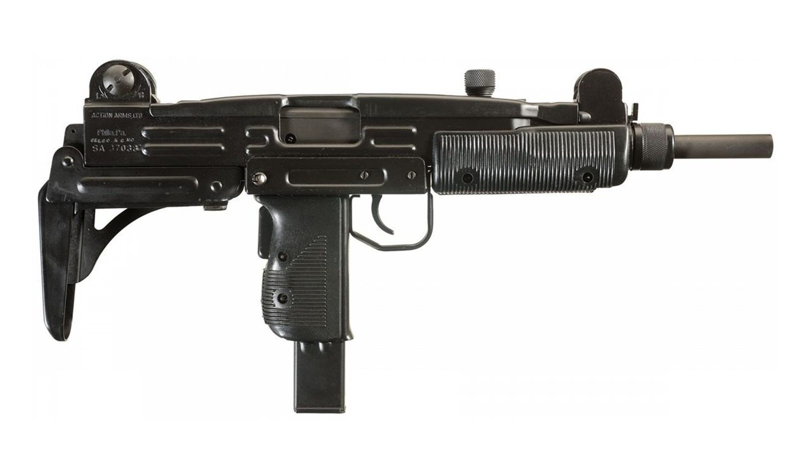

Screen firearms/The Terminator (1984)/Uzi 9mm

▦ 4 photos · ▶ 3 videosWeapon / Firearms
Uzi
9mm
The Terminator’s submachine gun in The Terminator (1984).
First seenThe Terminator, 1984
ModelIMI Uzi
Asked for as“Uzi 9 millimeter”
Key sceneThe Terminator opens up with the Uzi in the middle of Tech Noir.
Gallery
Appears in
Who carries it
More weapons
See all
12-Gauge Auto-Loader
3 photos · 3 videos
The Terminator · 1984 · The Terminator

.45 Longslide
4 photos · 3 videos
The Terminator · 1984 · The Terminator

Beretta 92F
3 photos · 2 videos
Die Hard · 1988 · John McClane, John Matrix, Joe Cox, T-1000 & Gregori

MP5
4 photos · 2 videos
Die Hard · 1988 · John McClane, John Rambo, John Matrix, T-1000 & Llewelyn Moss